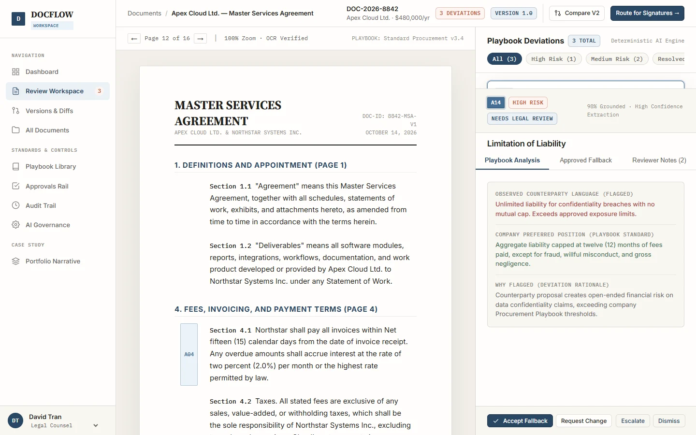

AI & PRODUCTIVITY
Docflow AI
Connect simulated AI findings to exact contract clauses so reviewers can inspect the evidence before acting.

Evidence-first contract review
An interactive contract-review concept with simulated findings, clause references, version comparison and approval flows. My scope covers information architecture, review interaction and UI design.
A risk summary needs a source
A reviewer must be able to locate the exact passage behind a finding and decide how to handle it. The interaction keeps the document and review context on the same screen.
Reviewers and approval roles
The prototype models reviewers and procurement, legal and finance approval stages. It uses sample documents and simulated findings.
Source, case narrative and test scope
The project provides a dedicated case study, source routes and automated verification for its modeled interactions. The evidence describes implementation.
Review workspace inside an operational shell
The queue leads to document review. Supporting routes include versions, document ingestion, playbooks, approvals, audit and policy settings.
Finding to passage to decision
Open a finding → activate its evidence anchor → inspect the exact clause → return to the finding with the supporting context → record a review decision.
Keep confidence and authority separate
A repeated anchor links the finding and the document margin. The confidence marker describes simulated model output. The decision state describes human review.
Review alternatives
The project narrative contrasts summary-first review with direct evidence navigation. The published review workspace makes the chosen approach inspectable.
Document and finding inspector
The capture shows a source document alongside the review inspector. Use the prototype to follow an anchor to its source passage.
Review states and presentation
The prototype models review status, approval stages and version comparisons. The two-column workspace is optimized for desktop document review.
Inspect the implemented surface
The linked review route renders the document and the findings UI. The source records checks for route and state behavior.
Limits and follow-up
The work demonstrates source-linked review and human oversight. Model accuracy, legal interpretation and the effectiveness of the workflow with professional reviewers remain to be evaluated.